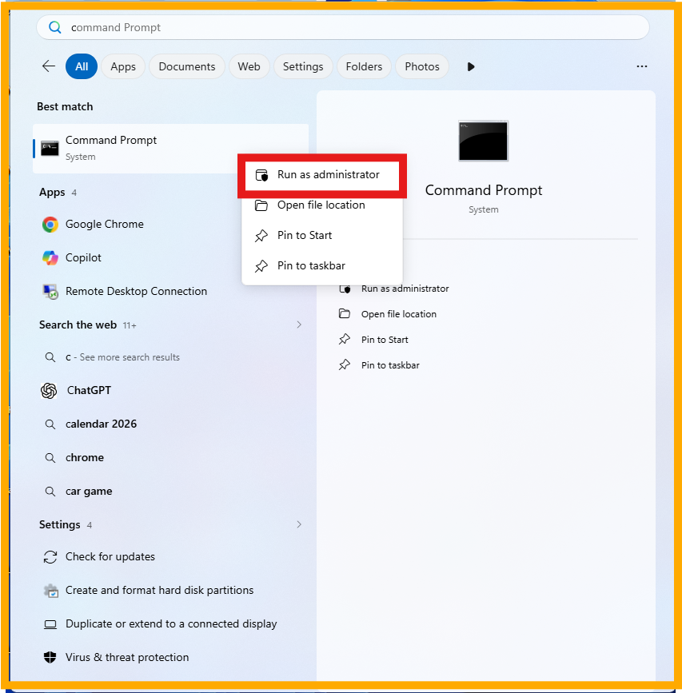

Darshan Tech Solution
Amazing Computer Shortcuts
YouTube Video
Amazing Computer Keyboard Shortcuts
Explained in this chapter, a pendrive can be converted into a bootable device using Command Prompt without third-party software by transferring the operating system ISO file to the USB drive. After preparing the bootable pendrive, the computer can be started from the USB device to install the Windows operating system. This method offers a simple and quick way to install or reinstall an operating system.
Before proceeding, make sure you have the operating system ISO file ready and that the pen drive is empty. Since the drive will be formatted during the process, ensure that no important files are stored on it before creating the bootable device for installing Windows.
- Insert the Pendrive
- Right click and run as administrator on command prompt
- Type the following command
- Diskpart
- list disk
- select disk 1
- clean
- create partition primary size=7000
- list partition
- select partiton 1
- active
- format fs=ntfs quick
- assign
- exit
- Type the following commands
- xcopy f: h: /e /h /k
- after copied the file. The pendrive will be converted into bootable device and ready to install.

The list of disk available on your computer will be appear on this screen. Note your pendrive disk numnber. (Here explained: Hard drive is Drive 0 and Pendrive is Drive 1 )
size is in MB
note the pendrive colon and ISO file colon
f: is the ISO file location
h: is the pendrive location
Watch on You Tube
Follow on my Social Media